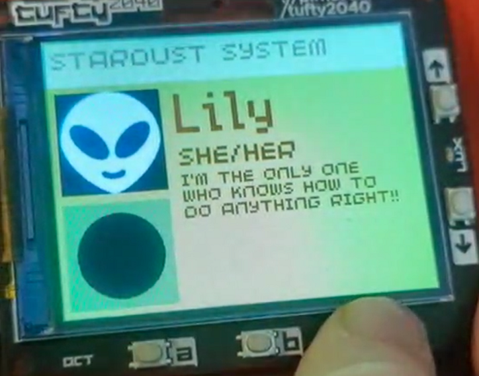

The Tufty Acorn system is an easy way for plural systems to interface with the Tufty2040 digital badge system. Rather than making custom python code, it allows users to upload a PluralKit exported system.json file, which will format the badge to scroll through system members to represent the current fronter. Created for a friend.
